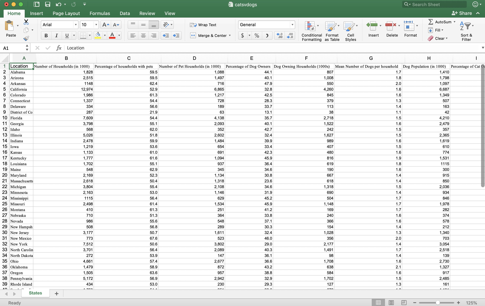
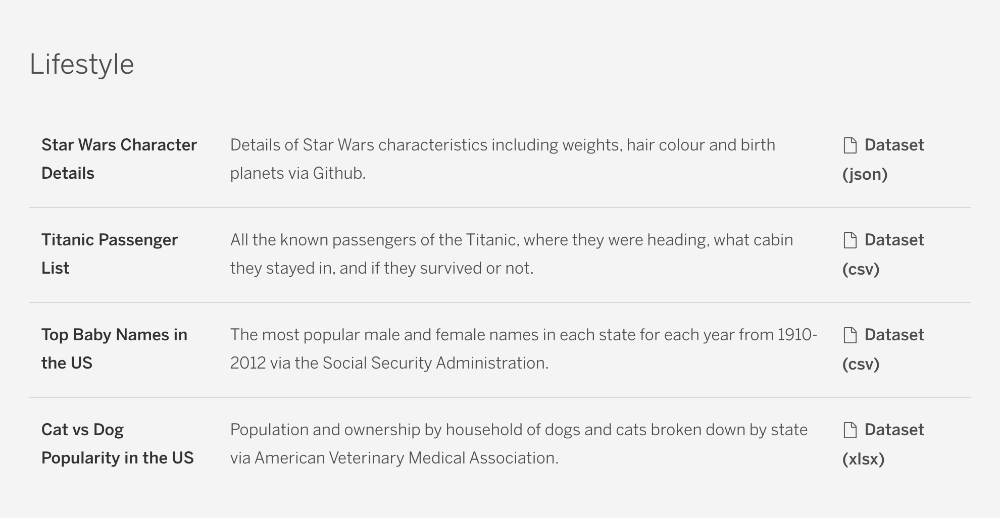
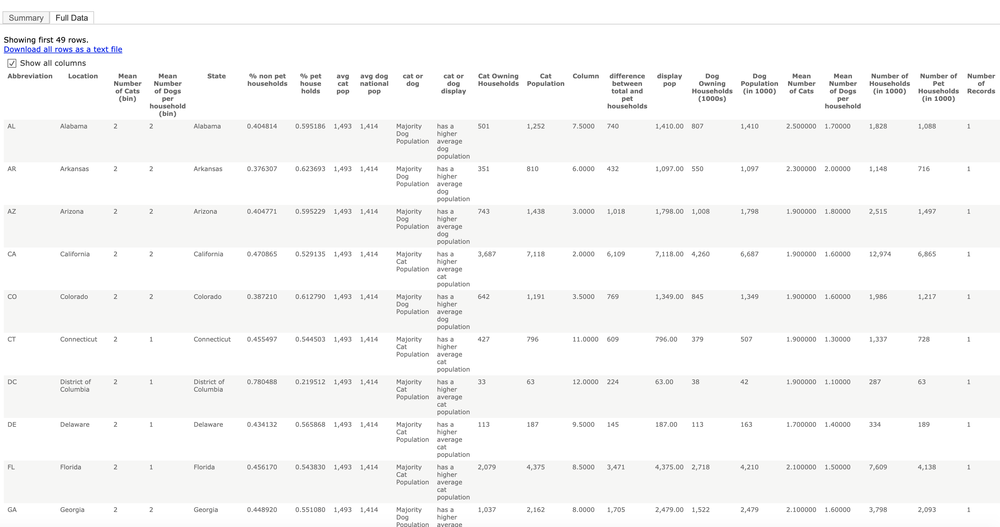

Our first step in completing this project was choosing a data set. To do this, we looked at various collections of public data sources but decided to use a data set from Tableau Public because of how well organized and interesting the data sets offered there were. The data set that piqued our interest the most was a data set called “Cat vs. Dog Popularity in the US.” After having a raucous and lively debate about whether cats or dogs are better, we decided that we wanted to investigate this issue and use this data to create our visualization. Here is our main data source.
 After choosing our dataset, we came up with a number of questions that we wanted to answer. These questions are listed below: Are cats or dogs the more popular pet in the US? In which state are there the most cat owners? In which state are there the most dog owners? Is there a particular part of the country that prefers dogs over cats or vice versa? Do most people in the US own either a cat or a dog? What is the average number of cats and dogs per household in the US?
The next step for us was to clean and process this data set. Luckily for us, the data presented was already very clean, but we did need to do some processing in order to best answer some of our lingering questions. We created additional columns using SQL commands and if statements. These additional columns included “percent pet household” and “percent non-pet household,” which held the data for the percentage of households in the U.S. that owned and did not own pets respectively. We also created a new data table column called “cat or dog” which stated whether the state of that row had a majority dog population or a majority cat population. Additionally, we found a dataset with state abbreviations and the positions for where marks should be displayed to create a visualization that would take the shape of a map of the U.S. We left joined this dataset with the cats and dogs dataset in order to have all our data in one place.
While the topic of our project may not be the most ground breaking or influential subject, the lessons we learned were enumerable. Firstly, coming together as a group to choose a project idea was no easy task. We scrolled through many different data sets debating on the overarching theme, the applicability of the data, our own individual interests in the topic, and with each topic came personal opinions that all needed to be satisfied. When working with a team, it is important to understand that each person needs to have interest in project. If even just one member does not care about the idea, then the final outcome will reflect that – we are only as strong as our weakest link!
Once we chose the topic that appeased and interested us all – the age-old debate of cats vs. dogs- we could begin the thought process to craft the visualization. Here is another lesson learned: iterations are necessary! As seen above, we went through many different design iterations in order to figure out which one best reflected our data, and most easily delivered our message – there is clear divide in the US over cats vs. dogs. We also were able to learn more, at least on the surface level, about the US population through such a simple facing question. For example, does New York prefer cats over dogs because it is much easier to own cats in places such as NYC? We truly were able to see how data is the lines of text in a storybook, and the visualizations are the beautiful images that tie the whole story together. It is not very often in Computer Science courses here at BC that we are able to sit down and craft stories – but with this project we were able to draft, propose, edit, and publish our very own.